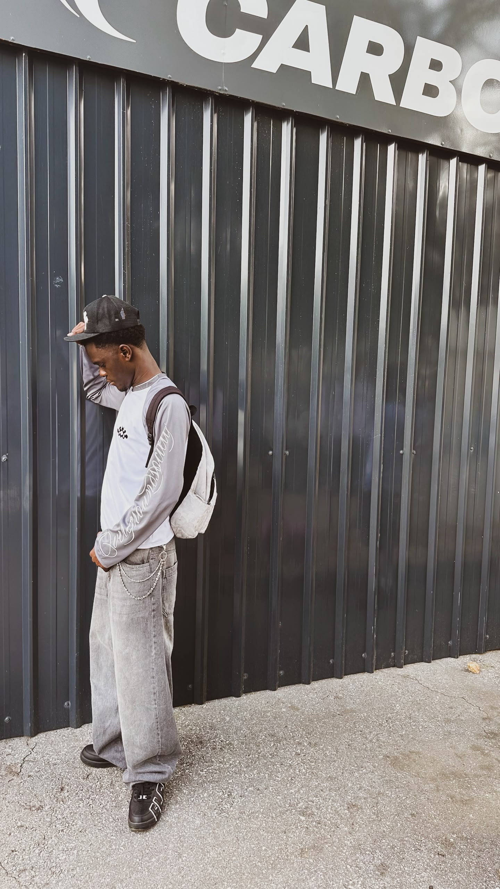
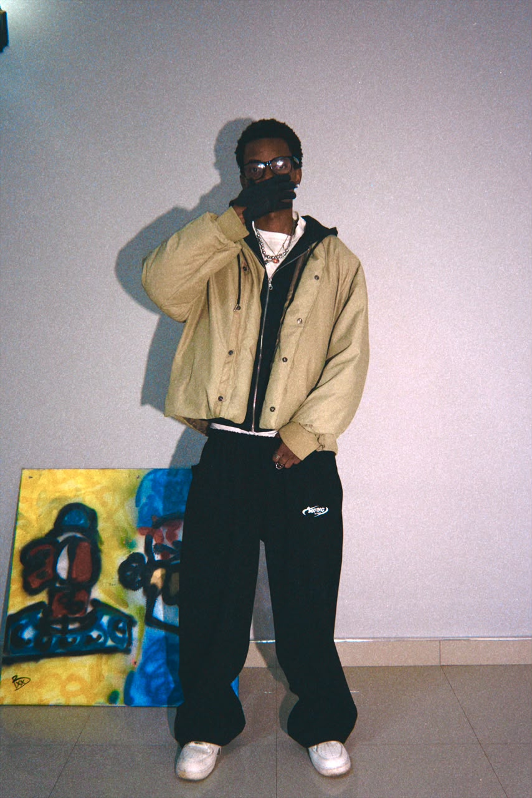

Stay Countin or Stay Doubtin
Founded in 2024, StayCountinUp Records is an independent label built around creativity, ambition, and the development of underground artists and creatives. The movement focuses on creating opportunities, building connections, and pushing the culture beyond borders.

Founder of StayCountinUp Records and one of the label's recording artists. AbrahamXO! leads the label's vision, creative direction, and overall growth.
Instagram: @abrahamxo17
TikTok: @abrahamxo17
Email: abrahamxo555@gmail.com

Lucky2x helps guide and develop the label's artists while acting as a bridge between the Zambian underground and South African underground scenes.
Instagram: @lucky2x_

Handles StayCountinUp's marketing strategy, promotion, and brand visibility. Also represents Overground Society, bringing his own creative identity into the movement.
Instagram: @daniel.chombaa
TikTok: @dirty.money.president

Trap-influenced producer contributing to the sound and creative direction of StayCountinUp Records.
Instagram: @kond3ani_
TikTok: @konrizzy_

Rapper and part of the creative force behind StayCountinUp Records. NoStylst helps oversee the label's operations and business structure.
Instagram: @theebackendson
TikTok: @theebackendson

Leads the visual side of StayCountinUp Records through film, storytelling, and cinematic content.
Instagram: @lanc3yy_
TikTok: @freelanc3rr_

Pretoria-based producer known for his trap-influenced sound. Produced "Get It And Go" by AbrahamXO!, one of the biggest Zambian underground songs.
Instagram: @supertrapper1306

Producer known for heavy synths and atmospheric sounds, bringing an immersive style to the label's production.
Instagram: @_.bongani._

Rage producer bringing an energetic and futuristic sound to StayCountinUp Records.
Email: abrahamxo555@gmail.com